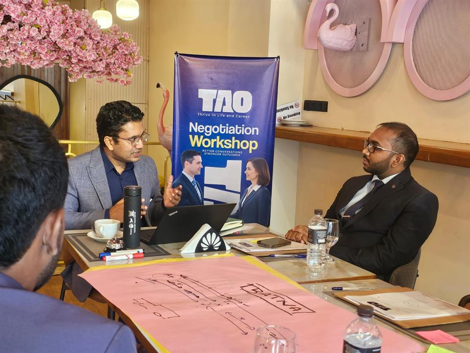
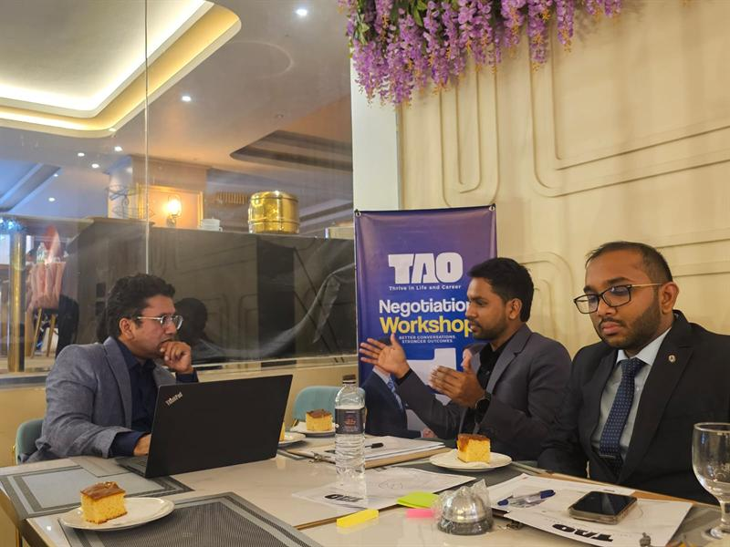
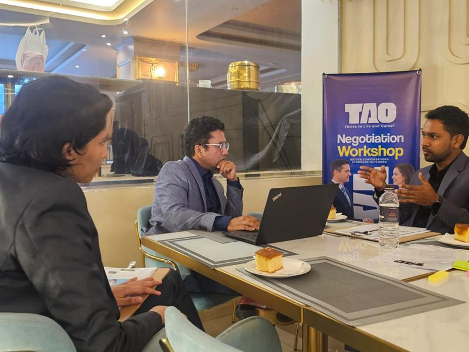
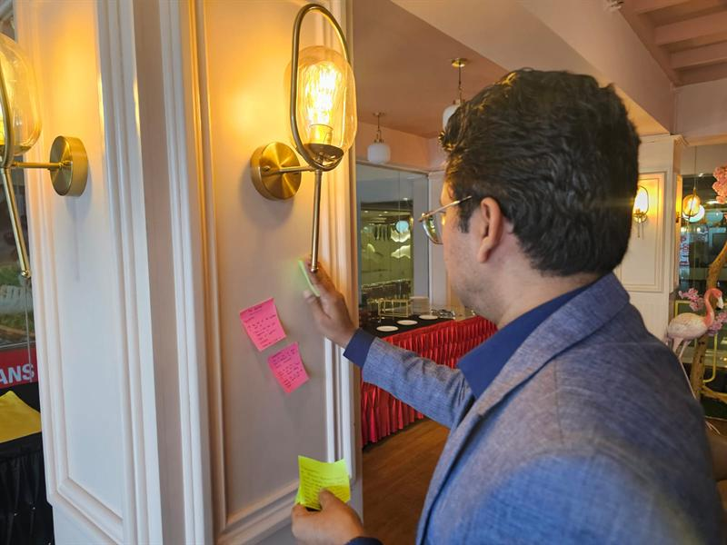
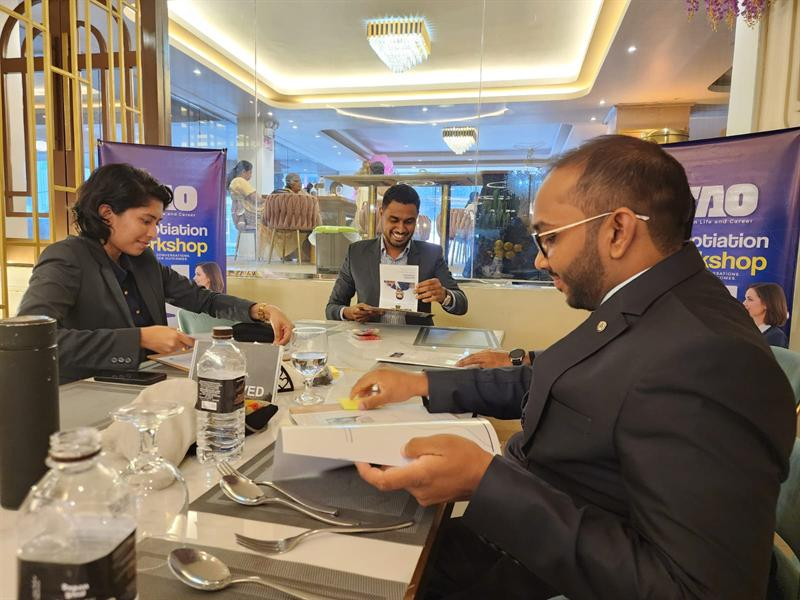

TAOThrive in Life & Career
Develop the human skills behind better conversations, stronger leadership and effective negotiation.
Practical, facilitated development for professionals, leaders, teams and organisations.
Led by Didula Weerasekara (communication & leadership) and Harshadewa Amaratunga (international negotiation & mediation)
Where to start
What are you looking to develop?
Choose the route that fits you. Each one leads straight to the programmes, workshops and conversations that matter for it.
-
Develop myself
For professionals who want to communicate, lead and work with people more effectively.
Individual programmes -
Develop my team
For teams that need stronger communication, collaboration and leadership.
Team development -
Develop my organisation
Custom learning and development programmes, designed around your people and context.
Work with TAO -
Attend a workshop
Join a practical, facilitated workshop alongside other professionals.
Upcoming workshops
What we develop
Six areas where human skill decides the outcome.
Technical expertise determines what people know. These capabilities determine what they can do with it in the meeting, the negotiation and the team.
-
Communication
Communicate clearly, listen effectively and handle difficult conversations.
Explore -
Leadership
Develop the communication, decision-making and interpersonal skills behind effective leadership.
Explore -
Negotiation
Prepare properly, understand interests and reach agreements that last.
Explore -
Influence
Move conversations and people forward without relying solely on authority.
Explore -
Emotional Intelligence
Understand emotions, behaviour and interpersonal dynamics, and respond with judgement.
Explore -
Cross-Cultural Communication
Communicate effectively across cultures, contexts and professional environments.
Explore
Programmes
Practical learning. Real practice. Transferable skills.
Programmes for individuals and for organisations. Each combines focused frameworks, live practice and a plan for applying it at work.
Workshops
Learn it in the room, with others.
Public workshops bring professionals together to prepare, practise and debrief real situations with both facilitators.
The TAO Method
Insight is useful only when it becomes behaviour.
Every programme moves through four steps, so people leave having practised the skill, not only having heard about it.
- 01
Understand
Build awareness of yourself, others and the situation you are working in.
- 02
Learn
Acquire practical frameworks and tools, and only those you will use.
- 03
Practise
Use them in realistic exercises and facilitated practice, where it is safe to get it wrong.
- 04
Apply
Transfer the learning into specific actions at work and in everyday situations.
Frameworks clarify. Practice changes behaviour.
More about our approachInside a TAO session
Not a lecture. A rehearsal.
What taking part actually looks like: small groups, real situations and plenty of practice, with a facilitator alongside you.
- Real conversationsWork on the situations you actually face.

- Practical exercisesShort, focused tasks that build one skill at a time.

- Role-play and simulationsRehearse the conversation before it matters.
- Facilitated discussionCandid debriefs on what worked and why.
- ReflectionNotice the habits and assumptions behind behaviour.

- Action planningLeave with specific commitments to take back to work.

The facilitators
Two disciplines. One room.
Complementary specialists: one grounded in communication and leadership, the other in international negotiation and mediation.

For organisations
Development that fits the real workplace.
Programmes designed with you for leadership teams, departments, professional bodies, educational institutions and NGOs, built around your context, your people and your own cases.
- Communication
- Leadership
- Team development
- Negotiation
- Difficult conversations
- Influence
- Professional effectiveness
- Custom workshops
- Conversation
- Design
- Delivery
- Follow-through
What participants say
In their words.
Insights
Thinking for practitioners.
Next step
What would you like to develop?
Whether you are developing yourself, your team or your organisation, start with a conversation. We will suggest the right starting point.